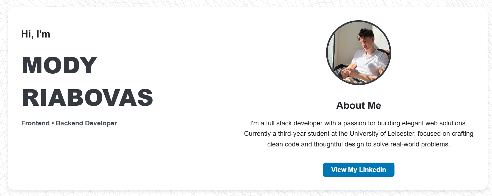

My Portfolio – Personal Website

UI/UX
Web Design and Development
Backend Development
My personal website was built completely from scratch using HTML, CSS, and JavaScript – no templates or frameworks. It serves as an evolving digital portfolio showcasing my academic journey, technical projects, and creative work from Sixth Form to university.
- Designed a clean, modern UI/UX to reflect my identity as a developer and designer
- Implemented category-based filtering system with interactive project views
- Developed a responsive layout for accessibility across all devices
- Created custom assets including header graphics and UI cards using Adobe Photoshop
- Continuously updated to reflect latest projects, achievements, and experience
This site is not just a portfolio – it’s a creative canvas that combines form, function, and storytelling to represent my growth as a digital designer and developer.